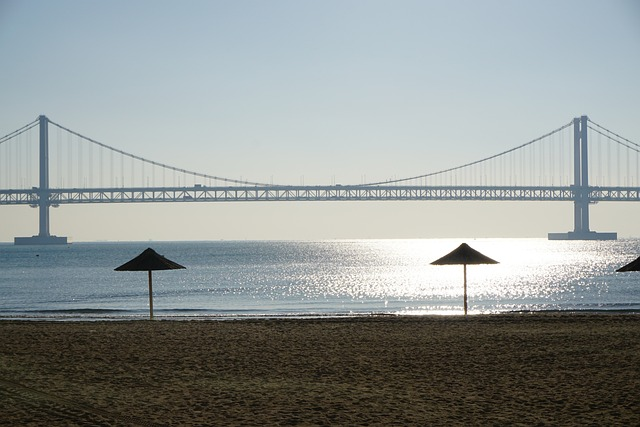

건강한 삶을 위한 기본지식 창고
건강한 삶을 위한 기본지식 창고 지비츠,문구류는 바로여기
지비츠,문구류는 바로여기
광안대교(廣安大橋, 영어: Gwangan Bridge) 혹은 다이아몬드 브릿지(영어: Diamond Bridge)는 부산광역시에 위치한 다리이며 부산광역시도 제66호선의 일부이다. 이 다리는 수영구 남천동 49호 광장과 해운대구 우동 센텀시티를 연결하는 대한민국 최대의 해상 복층 교량이다. 남천동 49호 광장에서 센텀시티 방면으로 갈 때는 1층 교각 도로로, 반대편인 센텀시티에서 남천동 49호 광장 방면으로 갈 때는 2층 교각 도로를 이용하여 주행해야 한다.

광안대교 광안대로의 개통으로 수영로와 해운대 지역의 만성적인 교통체증을 획기적으로 개선하게 되었고 광안대로의 개통으로 수영로와 해운대 지역의 만성적인 교통체증을 획기적으로 개선하게 되었고 항만 물동량을 신속하게 경부고속도로와 연결 하여 물류비용의 감소와 수출경쟁력 제고에 기여하고 있으며, 또한 최첨단 부산 정보업무 복합단지인 센텀시티의 기능을 극대화 하게 되며, 광안리, 해운대 관광특구와 연계하여 관광명소로 활용되어 해상 관광의 활력을 높이고 부산이 세계적인 무역도시이자 해양도시로 뻗어나가는데 일익을 담당하고 있다. 교량으로서의 기능 뿐만 아니라 상층부에서 바라보는 주변경관이 일품으로 바다, 오륙도, 광안대로를 둘러싼 황령산과 아기자기한 백사장, 해운대 동백섬과 달맞이 고개 등이 한눈에 들어온다. 조명 시스템이 구축되어 10만가지 이상의 색상으로 연출할 수 있는 경관조명이 유명하다.
광안대교는 2층 교량으로 각 방향별 일방 통행 구조이며, 빠른 관리를 위해 두 층의 관할 경찰서, 구청이 다르다. 상층부는 해운대구에서 수영구 방향이므로 해운대구에서 진입이 편리하여 해운대구청, 해운대경찰서 관할이고 하층부는 그 반대 이유로 인해 수영구청과 부산남부경찰서 관할이다. 매년 광안대교 걷기행사도 개최되고 있다. 광안대로의 개통으로 수영로와 해운대 지역의 만성적인 교통체증을 획기적으로 개선하게 되었고 항만 물동량을 신속하게 경부고속도로와 연결 하여 물류비용의 감소와 수출 경쟁력 제고에 기여하고 있으며, 또한 최첨단 부산 정보업무 복합단지인 센텀시티의 기능을 극대화 하게 되며, 광안리, 해운대 관광특구와 연계하여 관광명소로 활용되어 해상 관광의 활력을 높이고 부산이 세계적인 무역도시이자 해양도시로 뻗어나가는데 일익을 담당하고 있다.
광안대교는 개통과 동시에 전 구간이 국토교통부 도로관리청에서 자동차 전용도로로 지정되어 있으므로 이로 인해 보행자, 자전거, 손수레, 우마차 등은 통행이 금지되어 있다. 이륜자동차(모터사이클 혹은 오토바이)의 경우는 긴급자동차로 지정된 이륜자동차(싸이카 및 소방용 모터사이클 등)에 한해 통행이 가능하나 그 밖의 이륜자동차와 초소형 전기차, 농기계 등은 통행이 금지되어 있다. 광안대교는 2028년 5월까지 요금을 징수하는 유료 교량이다. 혼잡시간대에는 20% 할인된 요금을 받는다. (단, 경차는 할인대상에서 제외된다) 벡스코 요금소에는 하이패스ㆍ일반 혼용차로로 운영된다.
2019년 CNN GO가 선정한 한국에서 가봐야 할 아름다운 곳 TOP 50 명단에서 4위에 랭크되어 있다. 매년 부산불꽃축제도 광안리 해수욕장에서 한다. 부산불꽃축제는 2005년 APEC 정상회의 축하를 위해 일회성으로 광안대교 일대에서 불꽃축제를 했었다. 그런데 2006년부터 부산불꽃축제로 격상하여 매년 가을에 진행해왔다. 2023년 4월 6일에는 2030년 엑스포에 부산유치를 하려고 아주 화려한 불꼿축제를 했다.